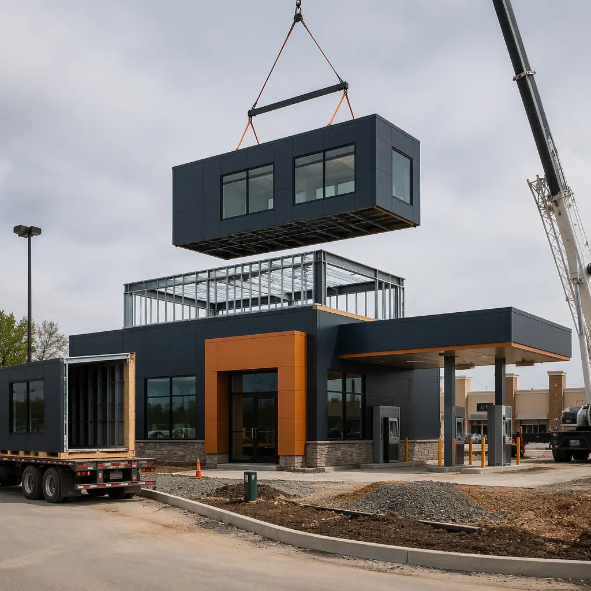
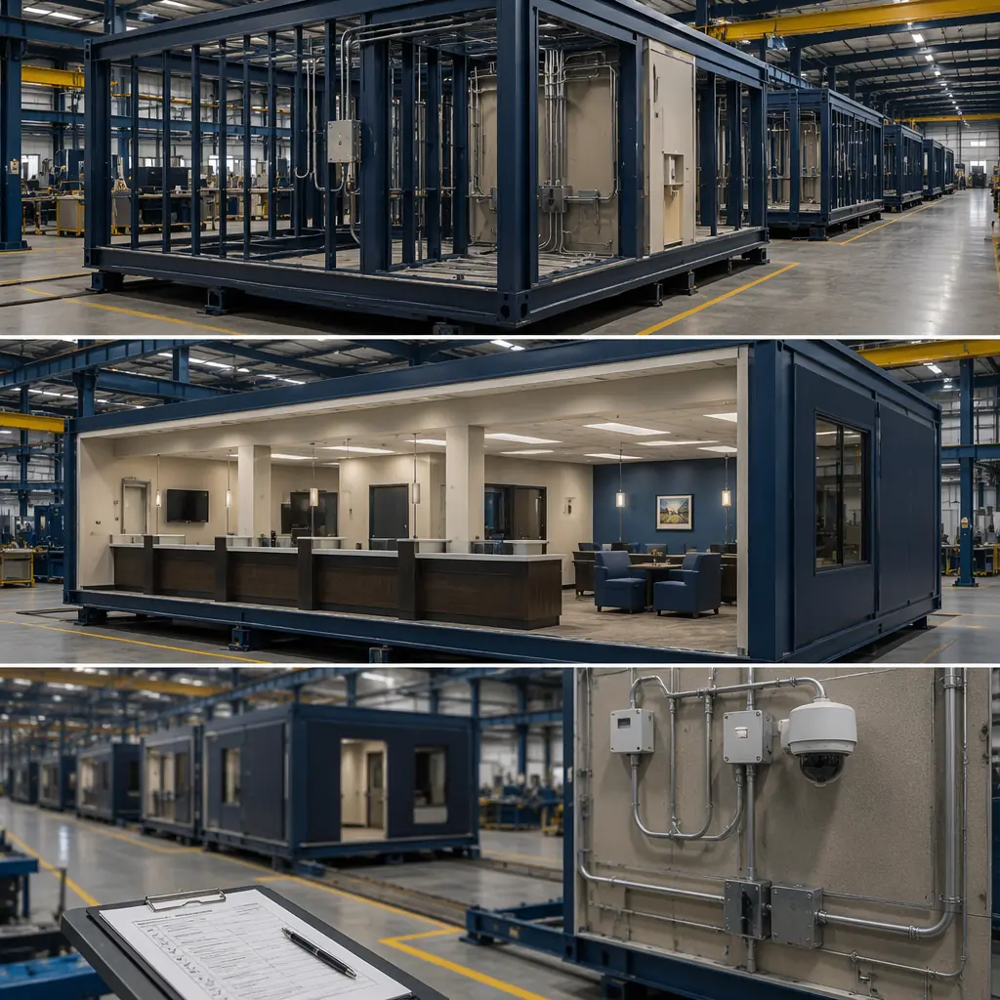
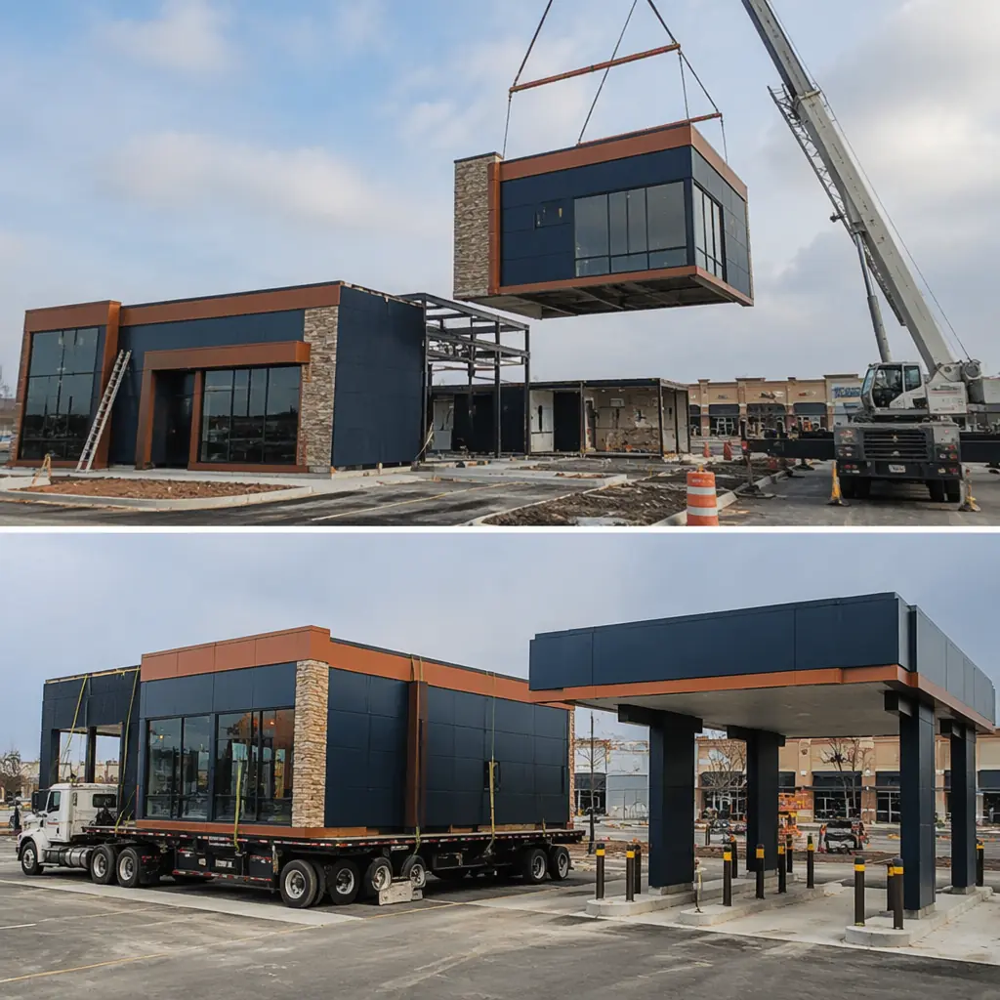
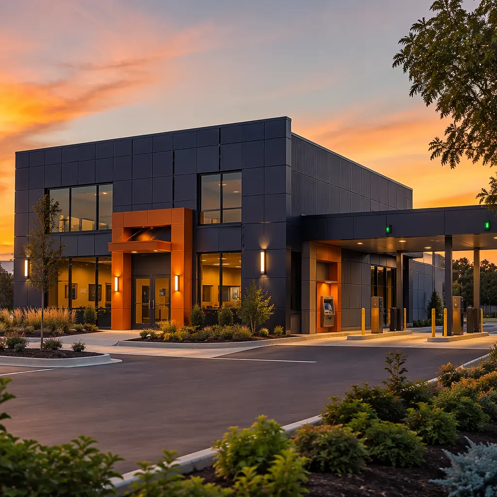

US financial institutions operate approximately 70,000 bank branches and 4,600 credit union locations with a combined physical footprint that requires continuous renewal. Branch network optimization — closing underperforming locations, opening new branches in growth corridors, and refreshing aging facilities — is a permanent operational reality for retail banking. Yet conventional branch construction takes 8–12 months per location, a timeline that forces banks to make real estate commitments 18–24 months before a branch generates its first transaction. Modular prefabricated construction compresses branch delivery to 4–6 months and introduces a capability that conventional construction cannot offer: branch mobility. A modular bank branch can be disassembled, transported, and redeployed to a new market if the original location underperforms — transforming the branch from a 20-year sunk cost into a relocatable asset. This article examines the security, technology, and financial logic that makes modular construction the strategic choice for financial institution facility managers.

Why Financial Institutions Are Adopting Modular: Speed, Security, and Portfolio Flexibility
Bank branch construction faces three constraints that modular methods address directly — and adds a fourth capability that transforms how institutions think about their physical network:
Time-to-market in growth corridors. When a suburban market adds 5,000 new households, the first bank to open a physical branch captures 40–50% of new-account openings in that trade area. Conventional construction's 8–12 month timeline means the bank commits to a site 12–18 months before it can serve customers — by which time a competitor with faster deployment may already be operating. Modular construction's 4–6 month delivery cycle allows a bank to wait until demographic data confirms the market opportunity before committing to a specific location, then deploy quickly enough to capture the first-mover advantage. Modular retail construction covers the economics of speed-to-market for consumer-facing commercial locations.
Security infrastructure integration. For a deeper look, our leed certification for modular construction &… guide covers the details. Bank branches require integrated physical security systems that are expensive and time-consuming to install in conventional construction: UL-rated vaults with 4–12 inch reinforced walls, Class 2–5 safes with concrete-encased steel, bullet-resistant teller windows meeting UL 752 Level 1–3 standards, dual-authentication access control, and segregated cash handling zones with man-trap entry sequences. In modular construction, the vault and security infrastructure are factory-installed — the vault walls are cast into the module structure, security conduits are pre-run through walls, and access control wiring is terminated in a central panel before the module leaves the factory floor. Factory installation eliminates the sequencing delays and trade conflicts that plague security system installation in site-built branches, where the vault contractor, electrician, low-voltage installer, and drywall contractor must coordinate across 4–6 separate site visits.
IT and technology pre-integration. A modern bank branch contains more technology per square foot than a typical office building: teller cash recyclers, ATM networks with dedicated data circuits, video surveillance with 90-day retention servers, customer-facing interactive kiosks, and backup power systems (UPS + generator transfer switch). Modular construction allows the bank's IT infrastructure to be pre-installed and tested in the factory — server racks mounted, structured cabling terminated and certified, and network equipment powered up and validated — before the module ships. The site phase reduces to connecting the module's single-point utility connections to site services, rather than running and terminating hundreds of individual cables in a dirty construction environment. Smart building technology integration covers the structured cabling and IoT infrastructure approach for modular commercial buildings.

Regulatory Compliance: FFIEC, ADA, and Physical Security Standards
Bank branches operate under a regulatory framework that extends well beyond standard commercial building codes. The Federal Financial Institutions Examination Council (FFIEC) mandates physical security standards, the Americans with Disabilities Act (ADA) imposes accessibility requirements that are more stringent than commercial retail, and individual state banking commissions may impose additional branch-specific requirements. Modular construction addresses these requirements through factory-documented compliance rather than field-verified compliance:
- FFIEC physical security compliance. The FFIEC IT Examination Handbook's Business Continuity Planning booklet requires financial institutions to assess physical security risks and implement controls at each branch location. Modular construction provides auditable documentation for every security element — vault wall reinforcement certification, bullet-resistant glazing test reports, access control system commissioning records — generated during factory production rather than assembled from multiple subcontractor affidavits after construction. For a bank's internal audit and compliance team, a single manufacturer's certification package replaces the document-chasing that accompanies site-built branch commissioning.
- ADA and accessibility standards. Bank branches must comply with ADA Standards for Accessible Design, including accessible teller counters (maximum 36-inch height with knee clearance), accessible ATM interfaces (reach range 15–48 inches, speech output enabled), and accessible queuing and waiting areas. Modular factory construction allows these dimensional requirements to be verified with laser measurement at each module — a QA step that site-built construction, with its tolerance accumulation across multiple trades, cannot match without punch-list rework at substantial completion. Modular building design flexibility covers how ADA requirements are integrated into modular prototypes without compromising design intent.
- Fire-rated construction for financial records. Bank branches storing physical loan documents, safe deposit box keys, or customer records may require fire-rated storage areas per IBC and NFPA requirements. Modular modules can be factory-built with 2-hour fire-rated wall and ceiling assemblies — the gypsum board layers, firestopping at penetrations, and rated door assemblies installed and inspected under factory QC before module enclosure. Modular construction fire safety covers the fire-rated assembly documentation pathway that satisfies both code officials and insurance underwriters.
Branch Prototype Standardization: From Prototype to Production
Most regional and national banks operate 3–5 branch prototypes — a 2,500 sq ft inline retail branch, a 4,000 sq ft freestanding branch with drive-through, a 6,000 sq ft flagship with wealth management offices — that are deployed repeatedly across their network. Modular construction turns each prototype into a manufactured product with fixed specifications, fixed cost, and fixed delivery timeline. The advantages go beyond construction efficiency:
Brand consistency across the network. When a bank builds 20 branches using conventional construction across 20 different general contractors in 20 different municipalities, brand consistency degrades — different material substitutions, different millwork suppliers, different paint sheens accumulate across the portfolio. Modular construction eliminates this variability: every Module Type B (teller line + customer service area) is built to the same finish specification regardless of destination. The bank's brand standards become manufacturing specifications, enforced by factory QC rather than field observation reports. Franchise and chain rollout provides the framework for prototype-driven modular deployment at scale.
Predictable capital planning. A bank's facilities budget must forecast branch construction costs 12–24 months in advance — a notoriously unreliable exercise when each branch bid comes from a different contractor in a different market with different labor rates. Modular construction's fixed-price prototype model allows the facilities team to budget with precision: 4,000 sq ft freestanding branch = $X, delivered in Y months, regardless of location. Cost per square foot benchmarks and project timeline planning provide the data to build a capital plan that the CFO can underwrite with confidence.

Branch Mobility: The Strategic Advantage Conventional Construction Cannot Offer
The most transformative capability modular construction brings to bank facility management is branch mobility — the ability to disassemble, transport, and redeploy a branch to a new market. This has no parallel in conventional construction, where a branch closure means writing off the entire construction investment as a sunk cost.
Consider a bank that opens a modular branch in a suburban market projected to add 8,000 households over 5 years. If the demographic growth materializes at only 3,000 households — the branch underperforms against its pro forma, but the building is not a loss. The modular branch can be unbolted at its inter-module connections, loaded onto flatbed trucks, transported to a different market with confirmed demand, and reassembled on a new foundation in 6–8 weeks. The bank's construction investment — the building shell, the security infrastructure, the IT systems — moves with it. Only the site-specific foundation and utility connections are abandoned. Modular building relocation covers the technical and logistical process for redeploying prefabricated structures.
This capability fundamentally changes the risk calculus of branch network expansion. A conventionally built branch is a 20-year bet on a specific trade area. A modular branch is a portable asset that can follow demographic shifts, respond to competitive entries, or consolidate into a different market if the original location underperforms. For a regional bank deploying 10–15 new branches, the portfolio-level risk reduction from modular mobility eliminates millions in potential stranded-asset exposure. Lease vs. buy analysis for modular buildings provides additional financial frameworks for evaluating modular ownership versus traditional construction.
Banking is a relationship business that still requires physical presence — but the rules of where and how to deploy that presence are changing faster than conventional construction can adapt. Modular construction gives financial institution facility managers a tool that matches the speed of their strategic decisions: deploy a branch in 4 months, relocate it in 6 weeks, and never write off a building as a sunk cost again.
